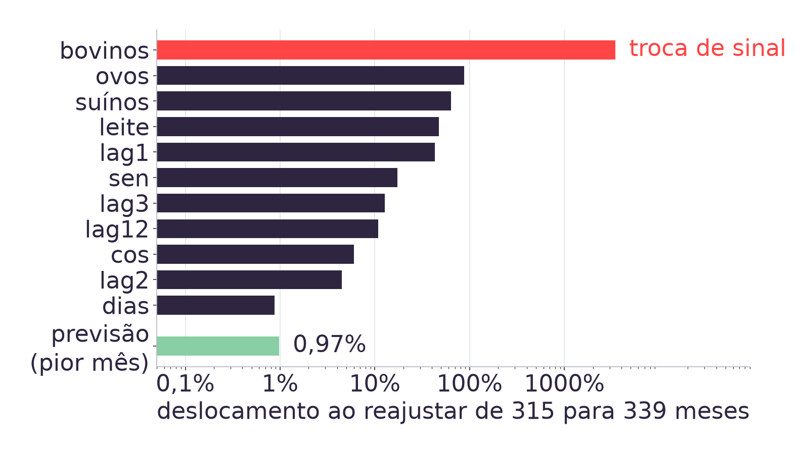
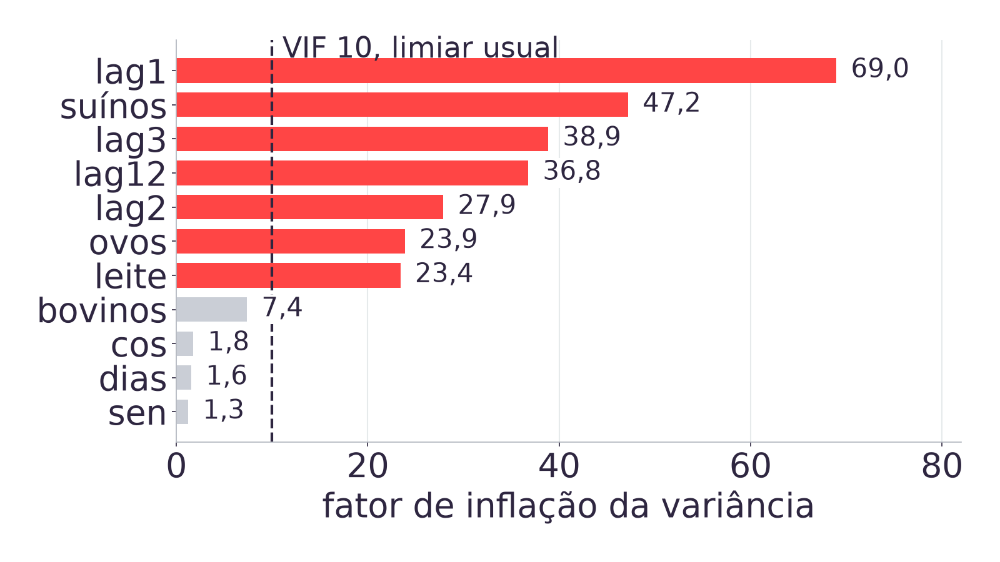

Módulo 03 IN · Aula 12 · 29/09/2026
Autoestudo na Adalove: pipelines no scikit-learn, exportação de modelo e os primeiros passos do MLflow [11].
Daily. Abertura da Sprint 5, a última do módulo, com planning ontem, 28/09.
O Pipeline (30 min), o que se exporta e o que se pode afirmar dele
(30 min), o MLflow (15 min) e a amarração com a ART.8 (15 min).
A Sprint 5 fecha em 07/10, e a Prova 02/10 vale 20 [10].
Módulo 03 IN · Aula 12 · Sprint 5
2
escalador = StandardScaler()
escalador.fit(X_treino)
modelo = LinearRegression()
modelo.fit(
escalador.transform(X_treino),
y_treino)
previsto = modelo.predict(
escalador.transform(X_teste))
# MAPE de teste: 2,86%O compare_models() varreu 22 candidatos e colocou modelos lineares no
topo. O vencedor, sobre o alvo em nível, erra 2,86% nos 24 meses de
teste e bate a floresta que duas aulas ajustaram à mão [12].
O trecho ao lado é o da Aula 11, sem alteração. Ele roda, e entrega o melhor número do acervo.
A Sprint 5 pede que esse modelo saia do notebook. E aí aparece a primeira pergunta [2].
Módulo 03 IN · Aula 12 · Sprint 5
3
Suponha que a dupla mande só o objeto modelo para a LDC, por e-mail. Do
outro lado, alguém carrega o arquivo, passa a base de setembro e recebe
2,63e17 quilogramas de frango abatido no mês, quando o valor medido pelo IBGE
é 1,19e9 [1]. A previsão sai 231 milhões de vezes maior, e
nada no código acusa [2].
O motivo é que o modelo foi ajustado sobre entradas padronizadas, e a padronização
usa as onze médias e onze desvios medidos no treino. Esses 22 números
não estão no objeto modelo. Eles estão no escalador, que ficou
para trás [5].
Pergunta disparada: o que mais precisa viajar junto com o modelo para ele funcionar fora do notebook? Listem tudo antes de a gente abrir o código.
Módulo 03 IN · Aula 12 · Sprint 5
4
from sklearn.pipeline import Pipeline
pipe = Pipeline([
("escala", StandardScaler()),
("modelo", LinearRegression()),
])
pipe.fit(X_treino, y_treino)
previsto = pipe.predict(X_teste)O Pipeline recebe uma lista de passos nomeados e os executa em ordem.
O fit ajusta cada passo com a saída do anterior; o predict
aplica os mesmos passos, na mesma ordem [5][6].
Cada passo continua acessível, por pipe.named_steps["escala"], o que
importa quando alguém precisar auditar o que foi gravado.
O objeto inteiro é um só. Quando ele for para disco, os 22 números do escalador vão junto [2].
Módulo 03 IN · Aula 12 · Sprint 5
6
| Caminho | MAPE nos 24 meses de teste |
|---|---|
| Escalador e modelo separados, como na Aula 11 | 2,8620136234% |
Os mesmos dois dentro de um Pipeline | 2,8620136234% |
| Maior diferença entre as 24 previsões | 0,0e+00 |
Não há ganho de precisão aqui, e quem esperava um não vai encontrar [2]. O
Pipeline reordena o mesmo cálculo, e o resultado é igual até o último bit.
O que muda é outra coisa, e ela só aparece quando o dado é repartido.
Módulo 03 IN · Aula 12 · Sprint 5
7
Na Aula 10, o TimeSeriesSplit treina cinco vezes, cada uma num recorte
diferente do histórico [12]. Com escalador solto, cada uma dessas cinco vezes precisa
reajustar o escalador na dobra certa, e lembrar disso é responsabilidade de quem escreve o
laço.
Com o Pipeline, o cross_val_score reajusta o objeto inteiro
por dobra. A disciplina deixa de depender de memória e passa a ser propriedade do
objeto [5].
Vale dizer o que a medição desta base não sustenta: ajustar o escalador
sobre treino e teste juntos aqui devolve MAPE idêntico até a nona casa, porque regressão
linear sem regularização é invariante a transformação afim das entradas. A Aula 05 já tinha
medido isso [12]. O argumento do Pipeline é a validação por dobra, e não um
ganho de erro nesta base.
Módulo 03 IN · Aula 12 · Sprint 5
8
Pipeline do modelo que a dupla escolheu na Aula 11.pipe.named_steps e contar quantos números o objeto carrega
além dos coeficientes.Módulo 03 IN · Aula 12 · Sprint 5
9
| Objeto | Treina com | MAPE nos 24 meses de teste |
|---|---|---|
| O avaliado, das Aulas 07 a 11 | 315 meses | 2,86%, o número honesto |
| O exportado, que vai para a LDC | 339 meses | 2,65%, sem significado |
A avaliação acabou na Aula 11: não há mais nada a decidir, e deixar 24 meses de dado real parados fora do modelo de produção seria desperdício. Por isso o objeto exportado é reajustado sobre a base inteira [2].
O 2,65% da segunda linha é melhor porque o modelo treinou com esses 24 meses. Publicá-lo é o vazamento que a Aula 09 ensinou a reconhecer [12]. O número que acompanha o modelo exportado é o 2,86%, medido no objeto avaliado.
Módulo 03 IN · Aula 12 · Sprint 5
11

O coeficiente de bovinos sai de negativo para positivo, e nenhuma das 24 previsões se move 1% [2].
Módulo 03 IN · Aula 12 · Sprint 5
12

São vinte pares de features com correlação acima de 0,90. Com entradas colineares, muitas combinações de coeficientes produzem quase o mesmo ajuste, e o modelo troca peso entre elas [2][7].
Módulo 03 IN · Aula 12 · Sprint 5
13
A Aula 05 mediu um número de condição de 1,08e10 nesta mesma família de dados e resolveu o problema padronizando [12]. É natural supor que a padronização resolva este também.
| Medida | Antes de padronizar | Depois |
|---|---|---|
| Número de condição da matriz | 3,22e9 | 28,5 |
| Maior VIF entre as onze features | 69,0 | 69,0 |
São dois problemas diferentes com a mesma aparência. Condicionamento numérico é sobre a escala das colunas, e a padronização o resolve. Colinearidade é sobre a correlação entre elas, e escala nenhuma desfaz correlação [7].
Módulo 03 IN · Aula 12 · Sprint 5
14
A previsão do modelo reajustado se move menos de 1% [2], então nada do que a LDC recebe como número muda de forma relevante. O reajuste é legítimo e o modelo está bom.
A frase explicativa tem outro destino. Se o relatório da dupla disser que abate de bovinos no mês anterior puxa a produção de frango para baixo, essa afirmação inverte na próxima vez que o modelo for reajustado com dado novo, sem que nada tenha piorado e sem que nenhum alarme dispare.
A Aula 10 ensinou SHAP e partial dependence em vez de leitura direta de coeficiente [12]. Esta é a demonstração de por quê. A literatura de dívida técnica em aprendizado de máquina chama isso de emaranhamento: mexer em qualquer entrada redistribui todas as outras [9].
Para a ART.8 sai um critério: o que a dupla publica como explicação precisa ser tão estável quanto o número que ela publica.
Módulo 03 IN · Aula 12 · Sprint 5
15
import joblib
joblib.dump(pipe,
"modelo.joblib")
recarregado = joblib.load(
"modelo.joblib")
# previsao identica
# bit a bitSão onze coeficientes, onze médias e onze desvios, mais o metadado do objeto. O
joblib grava o Python inteiro, e recarregar devolve previsão idêntica bit
a bit [2][5].
Este arquivo está versionado em app/modelo_aula12.joblib, e é o que a
Aula 13 carrega dentro do app Streamlit.
Um arquivo de 1,5 KB que atravessa a empresa inteira também atravessa versões de biblioteca. E aí aparece o aviso [3].
Módulo 03 IN · Aula 12 · Sprint 5
16
| O que foi medido | Resultado |
|---|---|
Gravar com scikit-learn 1.7.2, carregar com 1.9.1 | 3 InconsistentVersionWarning, um por estimador |
| Previsão do objeto carregado | idêntica bit a bit |
Voltar para o scikit-learn 1.6.1 no Python 3.14 | não existe wheel, o pip só oferece da 1.7.2 em diante |
O aviso é a única sinalização de que houve divergência, e a execução segue normalmente
depois dele. Quem roda com warnings silenciados perde até essa sinalização
[2][3].
A mitigação usual, instalar a versão antiga, tem prazo de validade dado pelo interpretador. A Aula 11 esbarrou no mesmo muro pelo outro lado, quando o PyCaret estável recusou o Python do acervo [12]. Por isso a versão vai declarada junto com o modelo.
Módulo 03 IN · Aula 12 · Sprint 5
17
Pipeline da dupla sobre a base completa, e só depois
exportar com joblib.dump.scikit-learn e o último mês da
base.Módulo 03 IN · Aula 12 · Sprint 5
18
| Autoestudo, MLflow com pasta | Aula, MLflow com banco |
|---|---|
mlflow.set_tracking_uri("file:./mlruns") | mlflow.set_tracking_uri("sqlite:///mlflow.db") |
mlflow ui --backend-store-uri file:./mlruns | mlflow ui --backend-store-uri sqlite:///mlflow.db |
A pasta mlruns/ é o padrão histórico da ferramenta e o que os autoestudos
ensinam [11]. A versão atual recusa esse backend, com
MlflowException: The filesystem tracking backend is in maintenance mode [8].
O sqlite é um arquivo só, não exige servidor e roda igual no Colab. É o
mesmo descompasso entre tutorial e biblioteca que a Aula 11 encontrou no PyCaret [12], e
ele já é conteúdo da ART.8: a versão faz parte da descrição do experimento [10].
Módulo 03 IN · Aula 12 · Sprint 5
20
| Execução | Meses de treino | mape_teste |
|---|---|---|
avaliado | 315 | 2,862014 |
producao | 339 | NaN, com tag explicando |
A execução de produção não pode ter essa métrica, porque não existe conjunto fora da amostra para ela. No lugar do número entra uma tag dizendo exatamente isso [2].
É uma decisão pequena e é o coração do rastreamento honesto: o registro precisa conseguir dizer que uma execução não tem determinada métrica, em vez de repetir o número da execução vizinha e deixar quem ler três meses depois concluir o que quiser [4].
Módulo 03 IN · Aula 12 · Sprint 5
21
mlflow.db local.scikit-learn e o último mês da base.mlflow ui --backend-store-uri sqlite:///mlflow.db e comparar as
duas execuções lado a lado.Módulo 03 IN · Aula 12 · Sprint 5
22
O modelo exportado, reajustado sobre as 339 linhas, erra 2,65% nos 24 meses de teste. O avaliado erra 2,86%. Qual número vai no relatório da ART.8?
Módulo 03 IN · Aula 12 · Sprint 5
23
Ao reajustar com 24 meses a mais, o coeficiente de
abate_bovinos_lag1 troca de sinal, e a previsão se move menos de 1%. O que
isso indica?
Módulo 03 IN · Aula 12 · Sprint 5
24
| Item | O que é |
|---|---|
O Pipeline exportado | pré-processamento e modelo num arquivo, reajustado sobre a base completa |
| O número que o acompanha | o MAPE medido no objeto avaliado, com o corte declarado |
| As versões | Python, scikit-learn e o último mês da base |
| O registro no MLflow | parâmetros, métricas, e o que cada execução não tem |
ART.8 Modelo Final, peso 4, na Sprint 5, com review em 07/10. A Prova 02/10 vale 20 e cobre a trilha inteira [10].
Amanhã, na Aula 13, este mesmo arquivo de 1,5 KB vira a tela que a LDC vê.
Módulo 03 IN · Aula 12 · Sprint 5
25
tools/tests/test_pipeline_aula12.py.docs/adrs/ADR-015.PLANO_DE_ENSINO.md, seções 4 e 6: peso 4 da ART.8, Prova 02/10 e review
em 07/10.TimeSeriesSplit, a Aula 09, do
vazamento, e a Aula 05, do condicionamento.Módulo 03 IN · Aula 12 · Sprint 5
26
Prof. Ovidio Lopes da Cruz Netto · Módulo 03 IN · 2026-2A